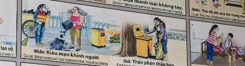

El Pedestal de la Soberbia The Pedestal of Pride Il piedistallo dell'orgoglio 骄傲的基座 قاعدة الكبرياء Пьедестал гордости Das Podest des Stolzes Le piédestal de la fierté 誇りの台座 O pedestal do orgulho Bệ đỡ kiêu hãnh
La arrogancia es una venda que nos impide vernos como iguales. Arrogance is a blindfold that prevents us from seeing each other as equals. L’arroganza è una benda sugli occhi che ci impedisce di vederci come uguali. 傲慢是一个眼罩，使我们无法平等地看待彼此。 الغطرسة هي عصابة العينين التي تمنعنا من رؤية بعضنا البعض على قدم المساواة. Высокомерие — это повязка на глазах, которая не позволяет нам видеть друг друга равными. Arroganz ist eine Augenbinde, die uns daran hindert, einander als gleichwertig zu sehen. L’arrogance est un bandeau qui nous empêche de nous considérer comme égaux. 傲慢さは、私たちがお互いを平等に見ることを妨げる目隠しです。 A arrogância é uma venda que nos impede de nos vermos como iguais. Sự kiêu ngạo là sự bịt mắt khiến chúng ta không thể coi nhau là bình đẳng.
Sentirse superior y tratar a los demás con altanería crea un desequilibrio en la red de la conciencia. Al elevarse artificialmente sobre los hombros de otros, la ley del equilibrio prepara una caída proporcional.
Feeling superior and treating others with haughtiness creates an imbalance in the network of consciousness. By artificially lifting oneself above the shoulders of others, the law of balance prepares a proportional fall.
Sentirsi superiori e trattare gli altri con arroganza crea uno squilibrio nella rete della coscienza. Salendo artificialmente sulle spalle degli altri, la legge dell’equilibrio prepara una caduta proporzionale.
优越感和傲慢地对待他人会造成意识网络的不平衡。通过人为地站在别人的肩膀上，平衡法则准备了按比例的下降。
إن الشعور بالتفوق ومعاملة الآخرين بغطرسة يخلق خللاً في شبكة الوعي. ومن خلال الارتفاع المصطنع على أكتاف الآخرين، فإن قانون التوازن يعد لسقوط متناسب.
Чувство превосходства и высокомерное отношение к другим создают дисбаланс в сети сознания. Искусственно поднимаясь на плечи других, закон равновесия готовит пропорциональное падение.
Sich überlegen zu fühlen und andere hochmütig zu behandeln, führt zu einem Ungleichgewicht im Netzwerk des Bewusstseins. Durch das künstliche Aufsteigen auf die Schultern anderer bereitet das Gesetz des Gleichgewichts einen proportionalen Absturz vor.
Se sentir supérieur et traiter les autres avec hauteur crée un déséquilibre dans le réseau de conscience. En s'élevant artificiellement sur les épaules des autres, la loi de l'équilibre prépare une chute proportionnelle.
優越感を感じたり、他人を尊大に扱うと、意識のネットワークに不均衡が生じます。他人の肩の上で人工的に立ち上がることで、バランスの法則が比例して下がる準備をします。
Sentir-se superior e tratar os outros com arrogância cria um desequilíbrio na rede de consciência. Ao subir artificialmente sobre os ombros dos outros, a lei do equilíbrio prepara uma queda proporcional.
Cảm giác bề trên và đối xử kiêu căng với người khác tạo ra sự mất cân bằng trong mạng lưới ý thức. Bằng cách đứng lên trên vai người khác một cách giả tạo, quy luật cân bằng chuẩn bị cho một sự sa ngã tương ứng.
El efecto kármico es el descenso a los estratos más humildes. En la siguiente vida, aquel que fue arrogante se ve obligado a servir y a limpiar los desechos de aquellos a quienes una vez despreció, recuperando la humildad perdida.
The karmic effect is descent into the lowliest social strata. In the next life, the arrogant one is forced to serve and clean the waste of those they once despised, reclaiming their lost humility.
L'effetto karmico è la discesa agli strati più umili. Nella vita successiva, colui che era arrogante è costretto a servire e ripulire i rifiuti di coloro che una volta disprezzava, riconquistando la sua umiltà perduta.
业力效应是下降到最卑微的阶层。来世，曾经傲慢的他被迫为那些他曾经鄙视的人服务、清理废物，重新找回失去的谦卑。
التأثير الكرمي هو النزول إلى الطبقات الأكثر تواضعًا. وفي الحياة التالية، يضطر المتكبر إلى الخدمة وتنظيف نفايات أولئك الذين كان يحتقرهم ذات يوم، ويستعيد تواضعه المفقود.
Кармический эффект – это нисхождение до самых скромных слоев. В следующей жизни тот, кто был высокомерным, вынужден служить и убирать отходы тех, кого он когда-то презирал, вновь обретая утраченное смирение.
Die karmische Wirkung ist der Abstieg in die untersten Schichten. Im nächsten Leben wird der arrogante Mensch gezwungen, denen, die er einst verachtete, zu dienen und den Abfall aufzuräumen, wodurch er seine verlorene Demut wiedererlangt.
L’effet karmique est la descente vers les couches les plus humbles. Dans la vie suivante, celui qui était arrogant est obligé de servir et de nettoyer les déchets de ceux qu'il méprisait autrefois, retrouvant ainsi son humilité perdue.
カルマの影響は、最も卑劣な階層への降下です。次の人生では、傲慢だった彼は、かつて軽蔑していた人々に奉仕し、排泄物を掃除することを余儀なくされ、失われた謙虚さを取り戻します。
O efeito cármico é a descida às camadas mais humildes. Na próxima vida, aquele que era arrogante é forçado a servir e limpar os resíduos daqueles que antes desprezava, recuperando a humildade perdida.
Nghiệp quả là sự tụt xuống tầng lớp khiêm tốn nhất. Ở kiếp sau, kẻ kiêu ngạo buộc phải phục vụ và dọn dẹp sự lãng phí của những người mà mình từng khinh thường, lấy lại sự khiêm nhường đã mất.
Si observamos con detenimiento la imagen de este capítulo, descubriremos una verdad que estremece la lógica del tiempo: el hombre rico que mira desde su ventanal dorado con un rictus de desagrado, no está observando a un extraño. Debido a la ubicuidad del alma y a la naturaleza del universo cuántico —donde el tiempo no es una línea recta sino un eterno presente—, aquel soberano está contemplando un espejo deformado por su propia altivez. El vagabundo que busca entre los restos en la calle es él mismo en otra vertiente de su existencia.
If we observe the image of this chapter closely, we will discover a truth that shakes the logic of time: the rich man looking from his golden window with a grimace of distaste is not looking at a stranger. Due to the ubiquity of the soul and the nature of the quantum universe —where time is not a straight line but an eternal present— that sovereign is contemplating a mirror distorted by his own haughtiness. The vagabond searching through the remains in the street is himself in another strand of his existence.
Se osserviamo attentamente l'immagine di questo capitolo, scopriremo una verità che scuote la logica del tempo: il ricco che si affaccia alla sua finestra dorata con una smorfia di dispiacere non sta osservando uno sconosciuto. A causa dell’ubiquità dell’anima e della natura dell’universo quantistico – dove il tempo non è una linea retta ma un eterno presente – quel sovrano sta contemplando uno specchio deformato dalla sua stessa arroganza. Il senzatetto che fruga tra i resti della strada è lui stesso in un altro aspetto della sua esistenza.
如果我们仔细观察本章中的图像，我们会发现一个动摇时间逻辑的真理：那个带着不悦的表情从金窗向外看的富翁并不是在观察一个陌生人。由于灵魂的普遍存在和量子宇宙的本质——时间不是一条直线，而是永恒的存在——这位君主正在凝视一面因他自己的傲慢而变形的镜子。在街上搜寻遗骸的无家可归者是他自己存在的另一个方面。
إذا دققنا النظر في الصورة في هذا الفصل، سنكتشف حقيقة تهز منطق الزمن: الرجل الغني الذي ينظر من نافذته الذهبية بكشر الاستياء لا يراقب غريباً. نظرًا لوجود الروح في كل مكان وطبيعة الكون الكمي - حيث الزمن ليس خطًا مستقيمًا بل حاضرًا أبديًا - فإن ذلك الملك يفكر في مرآة شوهتها غطرسته. فالرجل المتشرد الذي يبحث بين البقايا في الشارع هو نفسه في جانب آخر من وجوده.
Если мы внимательно присмотримся к изображению в этой главе, то откроем истину, потрясающую логику времени: богач, с гримасой недовольства выглядывающий из своего золотого окна, не наблюдает за чужаком. Из-за вездесущности души и природы квантовой вселенной, где время — это не прямая линия, а вечное настоящее, этот государь созерцает зеркало, деформированное его собственным высокомерием. Бездомный, который ищет среди останков на улице, сам находится в другом аспекте своего существования.
Wenn wir uns das Bild in diesem Kapitel genau ansehen, werden wir eine Wahrheit entdecken, die die Logik der Zeit ins Wanken bringt: Der reiche Mann, der mit einer Grimasse des Unmuts aus seinem goldenen Fenster blickt, beobachtet keinen Fremden. Aufgrund der Allgegenwärtigkeit der Seele und der Natur des Quantenuniversums – wo die Zeit keine gerade Linie, sondern eine ewige Gegenwart ist – betrachtet dieser Souverän einen durch seine eigene Arroganz deformierten Spiegel. Der Obdachlose, der in den Überresten auf der Straße sucht, ist er selbst in einem anderen Aspekt seiner Existenz.
Si nous regardons attentivement l’image de ce chapitre, nous découvrirons une vérité qui ébranle la logique du temps : l’homme riche qui regarde par sa fenêtre dorée avec une grimace de mécontentement n’observe pas un étranger. En raison de l’ubiquité de l’âme et de la nature de l’univers quantique – où le temps n’est pas une ligne droite mais un éternel présent – ce souverain contemple un miroir déformé par sa propre arrogance. Le SDF qui fouille parmi les dépouilles dans la rue est lui-même dans un autre aspect de son existence.
この章のイメージを注意深く観察すると、時間の論理を揺るがす真実を発見するでしょう。不快感に顔をしかめながら金窓の外を眺める金持ちは、見知らぬ人を観察しているわけではありません。魂の遍在性と、時間が直線ではなく永遠の現在である量子宇宙の性質により、その君主は自分自身の傲慢さによって歪められた鏡を見つめているのです。路上で遺骨の中を捜索するホームレスの男性は、彼の存在の別の側面にある自分自身です。
Se olharmos atentamente para a imagem deste capítulo, descobriremos uma verdade que abala a lógica do tempo: o rico que olha pela sua janela dourada com uma careta de desgosto não está a observar um estranho. Devido à onipresença da alma e à natureza do universo quântico – onde o tempo não é uma linha reta, mas um presente eterno – esse soberano está contemplando um espelho deformado pela sua própria arrogância. O morador de rua que procura entre os restos mortais da rua é ele mesmo um outro aspecto de sua existência.
Nếu nhìn kỹ vào hình ảnh trong chương này, chúng ta sẽ khám phá ra một sự thật làm lung lay logic của thời gian: người đàn ông giàu có nhìn ra ngoài cửa sổ vàng với vẻ mặt nhăn nhó khó chịu không phải đang quan sát một người lạ. Do sự phổ biến của linh hồn và bản chất của vũ trụ lượng tử - nơi thời gian không phải là một đường thẳng mà là một hiện tại vĩnh cửu - vị vua đó đang chiêm ngưỡng một tấm gương bị biến dạng bởi sự kiêu ngạo của chính mình. Người đàn ông vô gia cư tìm kiếm những tàn tích trên đường phố đang ở trong một khía cạnh khác của sự tồn tại của mình.
No es necesario esperar a una vida remota para que se cumpla la sentencia; en el fondo de su conciencia, él ya es el hombre al que desprecia. La causa de su soberbia actual es la génesis del efecto que ya habita en la acera. Paradojalmente, al humillar a quien limpia, se está humillando a sí mismo en su destino inevitable. Pero en este entrelazamiento reside una esperanza luminosa: cuando este hombre complete su ciclo de aprendizaje como basurero, cuando sienta en su piel el frío del mundo y comprenda el valor de la dignidad en el servicio, su verdadera grandeza será infinitamente más pura que la que hoy ostenta en su trono. La humildad que ha olvidado en su palacio le será devuelta como un tesoro sagrado, y solo entonces volverá a ser un rey, pero esta vez un soberano del espíritu que sabe que en cada barredor late el mismo corazón eterno que en cada César.
It is not necessary to wait for a remote life for the sentence to be fulfilled; in the depths of his consciousness, he already is the man he despises. The cause of his current pride is the genesis of the effect that already dwells on the sidewalk. Paradoxically, by humiliating the one who cleans, he is humiliating himself in his inevitable fate. But in this entanglement lies a luminous hope: when this man completes his learning cycle as a street cleaner, when he feels the cold of the world on his skin and understands the value of dignity in service, his true greatness will be infinitely purer than what he flaunts on his throne today. The humility he has forgotten in his palace will be returned to him as a sacred treasure, and only then will he be a king again, but this time a sovereign of the spirit who knows that in every sweeper beats the same eternal heart as in every Caesar.
Non è necessario attendere una vita remota perché la sentenza venga eseguita; nel profondo della sua coscienza è già l'uomo che disprezza. La causa della sua attuale arroganza è la genesi dell’effetto che già vive sul marciapiede. Paradossalmente, umiliando l'addetto alle pulizie, umilia se stesso nel suo inevitabile destino. Ma in questo intreccio risiede una luminosa speranza: quando quest’uomo completerà il suo ciclo di apprendistato come netturbino, quando sentirà sulla pelle il freddo del mondo e comprenderà il valore della dignità nel servizio, la sua vera grandezza sarà infinitamente più pura di quella che oggi mostra sul suo trono. L'umiltà che ha dimenticato nel suo palazzo gli sarà restituita come un tesoro sacro, e solo allora sarà di nuovo re, ma questa volta un sovrano dello spirito che sa che in ogni spazzino batte lo stesso cuore eterno di ogni Cesare.
不必等到遥远的生命才执行判决；在他的良心深处，他已经是他所鄙视的人了。其目前傲慢的原因是人行道上已经存在的效应的起源。矛盾的是，通过羞辱清洁工，他也在羞辱自己不可避免的命运。但在这种交织中蕴含着光明的希望：当这个人完成垃圾收集工的学徒周期时，当他的皮肤感受到世界的寒冷并理解服务尊严的价值时，他真正的伟大将比他今天在王座上展示的伟大更加纯粹。他在宫殿中忘记的谦卑将作为神圣的宝藏返回给他，只有那时他才能再次成为国王，但这一次是精神的君主，他知道每个清扫者身上都跳动着与每个凯撒相同的永恒之心。
ليس من الضروري انتظار حياة بعيدة حتى يتم تنفيذ الحكم؛ في أعماق ضميره، هو بالفعل الرجل الذي يحتقره. سبب غطرستها الحالية هو نشأة التأثير الذي يعيش بالفعل على الرصيف. ومن المفارقة أنه بإذلال عامل النظافة، فإنه يهين نفسه في مصيره المحتوم. ولكن في هذا التشابك يكمن أمل مشرق: عندما يكمل هذا الرجل دورة تدريبه كجامع قمامة، وعندما يشعر ببرد العالم على جلده ويفهم قيمة الكرامة في الخدمة، فإن عظمته الحقيقية ستكون أنقى بلا حدود من تلك التي يعرضها على عرشه اليوم. التواضع الذي نسيه في قصره سيُعاد إليه ككنز مقدس، وحينها فقط سيكون ملكًا مرة أخرى، ولكن هذه المرة ملك الروح الذي يعرف أنه في كل كاسح ينبض نفس القلب الأبدي كما في كل قيصر.
Не надо ждать отдаленной жизни, чтобы приговор был приведен в исполнение; в глубине души он уже тот человек, которого презирает. Причина его нынешнего высокомерия — возникновение эффекта, уже живущего на тротуаре. Парадоксально, но, унижая уборщицу, он унижает себя в своей неизбежной судьбе. Но в этом переплетении заключена светлая надежда: когда этот человек завершит свой цикл обучения сборщику мусора, когда он почувствует холод мира на своей коже и поймет ценность достоинства в служении, его истинное величие будет бесконечно чище того, которое он демонстрирует сегодня на своем троне. Смирение, забытое им в своем дворце, будет возвращено ему как священное сокровище, и только тогда он снова станет царем, но на этот раз владыкой духа, знающим, что в каждом подметателе бьется то же вечное сердце, что и в каждом кесаре.
Es ist nicht notwendig, ein Leben lang auf die Vollstreckung des Urteils zu warten; Tief in seinem Gewissen ist er bereits der Mann, den er verachtet. Die Ursache seiner gegenwärtigen Arroganz ist die Entstehung der Wirkung, die bereits auf dem Bürgersteig lebt. Paradoxerweise demütigt er sich selbst in seinem unausweichlichen Schicksal, indem er die Reinigungskraft demütigt. Aber in dieser Verflechtung liegt eine leuchtende Hoffnung: Wenn dieser Mann seine Ausbildung zum Müllsammler abschließt, wenn er die Kälte der Welt auf seiner Haut spürt und den Wert der Würde im Dienst versteht, wird seine wahre Größe unendlich reiner sein als die, die er heute auf seinem Thron zur Schau stellt. Die Demut, die er in seinem Palast vergessen hat, wird ihm als heiliger Schatz zurückgegeben, und erst dann wird er wieder König sein, aber dieses Mal ein Herrscher des Geistes, der weiß, dass in jedem Feger das gleiche ewige Herz schlägt wie in jedem Cäsar.
Il n’est pas nécessaire d’attendre une vie lointaine pour que la sentence soit exécutée ; au fond de sa conscience, il est déjà l'homme qu'il méprise. La cause de son arrogance actuelle est la genèse de l’effet qui vit déjà sur le trottoir. Paradoxalement, en humiliant le nettoyeur, il s'humilie lui-même dans son destin inéluctable. Mais dans cet entrelacement se cache un lumineux espoir : lorsque cet homme aura achevé son cycle d’apprentissage d’éboueur, lorsqu’il sentira le froid du monde sur sa peau et comprendra la valeur de la dignité dans le service, sa véritable grandeur sera infiniment plus pure que celle qu’il affiche aujourd’hui sur son trône. L'humilité qu'il a oubliée dans son palais lui sera restituée comme un trésor sacré, et alors seulement il redeviendra un roi, mais cette fois un souverain de l'esprit qui sait que dans chaque balayeur bat le même cœur éternel que dans chaque César.
刑が執行されるまで遠い人生を待つ必要はない。良心の奥底では、彼はすでに軽蔑している人間だ。現在の傲慢さの原因は、すでに歩道に生息している効果の起源です。逆説的ですが、掃除人を辱めることで、彼は避けられない運命の中で自分自身を辱めているのです。しかし、この交錯の中に、光り輝く希望が眠っている。この男がゴミ収集人としての見習い期間を終えるとき、世界の冷たさを肌で感じ、奉仕における尊厳の価値を理解するとき、彼の真の偉大さは、彼が今日玉座に示しているものよりも限りなく純粋なものとなるだろう。彼が宮殿で忘れていた謙虚さは神聖な宝物として彼に返され、そのとき初めて彼は再び王になれるが、今度は、どの掃除人にもそれぞれのカエサルと同じ永遠の心が鼓動していることを知っている精神の主権者となる。
Não é necessário esperar uma vida remota para que a pena seja cumprida; no fundo da sua consciência, ele já é o homem que despreza. A causa da sua arrogância atual é a gênese do efeito que já vive na calçada. Paradoxalmente, ao humilhar o faxineiro, ele está se humilhando em seu destino inevitável. Mas neste entrelaçamento reside uma esperança luminosa: quando este homem completar o seu ciclo de aprendizagem como catador de lixo, quando sentir na pele o frio do mundo e compreender o valor da dignidade no serviço, a sua verdadeira grandeza será infinitamente mais pura do que aquela que hoje exibe no seu trono. A humildade que esqueceu em seu palácio lhe será devolvida como um tesouro sagrado, e só então voltará a ser rei, mas desta vez um soberano do espírito que sabe que em cada varredor bate o mesmo coração eterno de cada César.
Không nhất thiết phải đợi đến một cuộc đời xa xôi mới thi hành án; sâu thẳm trong lương tâm, anh đã là người mà anh khinh thường. Nguyên nhân của sự kiêu ngạo hiện tại của nó là nguồn gốc của hiệu ứng đã tồn tại trên vỉa hè. Nghịch lý thay, khi hạ nhục người dọn dẹp, anh ta lại đang tự hạ nhục chính mình trước số phận không thể tránh khỏi của mình. Nhưng trong sự đan xen này ẩn chứa một niềm hy vọng sáng ngời: khi người đàn ông này hoàn thành chu kỳ học nghề của mình với tư cách là một người thu gom rác, khi anh ta cảm nhận được sự lạnh lùng của thế giới trên da mình và hiểu được giá trị của phẩm giá khi phục vụ, thì sự vĩ đại thực sự của anh ta sẽ thuần khiết hơn vô cùng so với sự vĩ đại mà anh ta thể hiện trên ngai vàng ngày nay. Sự khiêm nhường mà anh ta đã lãng quên trong cung điện của mình sẽ được trả lại cho anh ta như một báu vật thiêng liêng, và chỉ khi đó anh ta mới trở lại làm vua, nhưng lần này là một vị vua có tinh thần mạnh mẽ, người biết rằng trong mỗi người quét rác đều có trái tim vĩnh cửu như trong mỗi Caesar.
La Inspiración Original
The Original Inspiration
L'Ispirazione Originale
最初的灵感
الإلهام الأصلي
Оригинальное вдохновение
Die Ursprüngliche Inspiration
L'Inspiration Originale
元のインスピレーション
A Inspiração Original
Nguồn cảm hứng ban đầu
La historia que hemos relatado en este capítulo está inspirada por el pasaje de la escena original de los murales «Tranh Nhân Quả» (Ilustraciones del Karma) del Templo Linh Ung en Da Nang, capturado en la imagen.
La storia che abbiamo raccontato in questo capitolo è ispirata al passaggio della scena originale dei murali “Tranh Nhân Quả” (Illustrazioni del Karma) del Tempio Linh Ung a Da Nang, catturati nell'immagine.
我们在本章中讲述的故事的灵感来自图像中捕获的岘港灵应寺“Tranh Nhân Quả”（业力插图）壁画的原始场景。
القصة التي رويناها في هذا الفصل مستوحاة من مقطع من المشهد الأصلي لجداريات "ترانه نهان كو" (الرسوم التوضيحية للكارما) لمعبد لينه أونغ في دا نانغ، الملتقطة في الصورة.
История, которую мы рассказали в этой главе, вдохновлена отрывком из оригинальной сцены фрески «Тран Нхан Ку» («Иллюстрации кармы») храма Линь Унг в Дананге, запечатленной на изображении.
Die Geschichte, die wir in diesem Kapitel erzählt haben, ist inspiriert von der Passage aus der Originalszene der Wandgemälde „Tranh Nhân Quả“ (Illustrationen von Karma) des Linh Ung-Tempels in Da Nang, die im Bild festgehalten ist.
L'histoire que nous avons racontée dans ce chapitre est inspirée du passage de la scène originale des peintures murales « Tranh Nhân Quả » (Illustrations du Karma) du temple Linh Ung à Da Nang, capturées dans l'image.
この章で私たちが語った物語は、ダナンのリンウン寺院の壁画「Tranh Nhân Quả」（カルマの図）の元のシーンの一節からインスピレーションを得て、画像に収められています。
A história que contamos neste capítulo é inspirada na passagem da cena original dos murais “Tranh Nhân Quả” (Ilustrações do Karma) do Templo Linh Ung em Da Nang, capturada na imagem.
Câu chuyện chúng tôi kể trong chương này được lấy cảm hứng từ đoạn trích từ cảnh gốc của bức tranh tường “Tranh Nhân Quả” ở chùa Linh Ứng ở Đà Nẵng, được ghi lại trong hình ảnh.
The story we have related in this chapter is inspired by the passage from the original scene of the "Tranh Nhân Quả" (Karma Illustrations) murals at the Linh Ung Temple in Da Nang, captured in the image.

Como se puede apreciar en el pasaje extraído del mural, la causa y su efecto kármico están descritos originalmente en vietnamita y con una breve traducción al inglés. A continuación, te ofrecemos su traducción detallada en los distintos idiomas:
As can be seen in the passage extracted from the mural, the cause and its karmic effect are originally described in Vietnamese with a brief English translation. Below, we offer the detailed translation in different languages:
Come si può vedere nel passaggio estratto dal murale, la causa e il suo effetto karmico sono originariamente descritti in vietnamita con una breve traduzione in inglese. Di seguito offriamo la traduzione dettagliata in diverse lingue:
正如壁画所见，原因及其业报原本用越南语描述并配有简短英文翻译。以下是各种语言的详细翻译：
كما يمكن رؤيته في المقطع المقتبس من اللوحة الجدارية، فإن السبب وتأثيره الكارمي موصوفان في الأصل باللغة الفيتنامية مع ترجمة إنجليزية موجزة. نقدم أدناه الترجمة التفصيلية بلغات مختلفة:
Как видно из отрывка, взятого из фрески, причина и кармический эффект изначально описаны на вьетнамском языке с кратким английским переводом. Ниже мы предлагаем подробный перевод на разные языки:
Wie in der aus dem Wandgemälde entnommenen Passage zu sehen ist, werden die Ursache und ihre karmische Wirkung ursprünglich auf Vietnamesisch mit einer kurzen englischen Übersetzung beschrieben. Nachfolgend bieten wir die detaillierte Übersetzung in verschiedenen Sprachen an:
Comme on peut le voir dans le passage extrait de la fresque, la cause et son effet karmique sont décrits à l'origine en vietnamien avec une brève traduction en anglais. Ci-dessous, nous proposons la traduction détaillée dans différentes langues :
壁画から抽出された一節に見られるように、原因とそのカルマ的影響は元々ベトナム語で説明されており、短い英訳が添えられています。以下に、さまざまな言語での詳細な翻訳を示します。
Como pode ser visto na passagem extraída do mural, a causa e seu efeito cármico são originalmente descritos em vietnamita com uma breve tradução para o inglês. Abaixo, oferecemos a tradução detalhada em diferentes idiomas:
Như có thể thấy trong đoạn trích từ bức tranh tường, nguyên nhân và nghiệp quả của nó ban đầu được mô tả bằng tiếng Việt và có bản dịch ngắn gọn sang tiếng Anh. Dưới đây, chúng tôi cung cấp cho bạn bản dịch chi tiết sang các ngôn ngữ khác nhau:
🇻🇳 Tiếng Việt:
Nguyên nhân: Kiêu ngạo và thiếu tôn trọng người khác. | Tác dụng: Mang lại địa vị xã hội thấp.
Traducción Recreada:
Causa: Ser arrogante e irrespetuoso con los demás.
Efecto: Trae bajo estatus social.
Recreated Translation:
Cause: Being arrogant and disrespectful towards others.
Effect: Brings low social status.
Traduzione ricreata:
Causa: essere arrogante e irrispettoso verso gli altri.
Effetto: porta un basso status sociale.
重新翻译：
原因：傲慢、不尊重他人。
结果：社会地位低下。
إعادة إنشاء الترجمة:
السبب: الغرور وعدم احترام الآخرين.
التأثير: يجلب مكانة اجتماعية متدنية.
Воссозданный перевод:
Причина: Высокомерие и неуважение к другим.
Эффект: Низкий социальный статус.
Nachgebildete Übersetzung:
Ursache: Arrogant und respektlos gegenüber anderen sein.
Wirkung: Führt zu einem niedrigen sozialen Status.
Traduction recréée :
Cause : être arrogant et irrespectueux envers les autres.
Effet : apporte un faible statut social.
再作成された翻訳:
原因: 傲慢で他人に対して無礼である。
結果: 低い社会的地位をもたらす。
Tradução recriada:
Causa: Ser arrogante e desrespeitoso com os outros.
Efeito: Traz baixo status social.
Bản dịch được tạo lại:
Nguyên nhân: Kiêu ngạo và thiếu tôn trọng người khác.
Tác dụng: Mang lại địa vị xã hội thấp.
Análisis: Despreciar al prójimo desde la arrogancia genera una deuda cósmica que se cobra sometiendo al espíritu a posiciones sociales de inmensa precariedad, para recordar que todos somos iguales en la esencia.
Analysis: Despising one's neighbor out of arrogance generates a cosmic debt that is collected by subjecting the spirit to social positions of immense precariousness, to remember that we are all equal in essence.
Analisi: Disprezzare il prossimo per arroganza genera un debito cosmico che si riscuote sottoponendo lo spirito a posizioni sociali di immensa precarietà, per ricordare che siamo tutti uguali nell'essenza.
分析：出于傲慢而蔑视邻居会产生宇宙债务，这种债务是通过使精神屈服于极其不稳定的社会地位而收集的，以记住我们本质上都是平等的。
التحليل: إن احتقار الجار بسبب الغطرسة يولد دينًا كونيًا يتم تحصيله عن طريق إخضاع الروح لمواقف اجتماعية شديدة الهشاشة، لنتذكر أننا جميعًا متساوون في الجوهر.
Анализ Презрение к ближнему из-за высокомерия порождает космический долг, который накапливается путем подчинения духа социальным позициям огромной нестабильности, чтобы помнить, что мы все равны по своей сути.
Analyse: Den Nächsten aus Arroganz zu verachten, erzeugt eine kosmische Schuld, die dadurch eingesammelt wird, dass der Geist in gesellschaftliche Positionen ungeheurer Unsicherheit gebracht wird, um sich daran zu erinnern, dass wir alle im Wesentlichen gleich sind.
Analyse : Mépriser le prochain par arrogance génère une dette cosmique qui se recouvre en soumettant l'esprit à des positions sociales d'une immense précarité, pour rappeler que nous sommes tous égaux par essence.
分析: 傲慢さから隣人を軽蔑することは、私たちが本質的に平等であることを思い出すために、精神を非常に不安定な社会的立場に置くことによって集められる宇宙的な負債を生み出します。
Análise: Desprezar o próximo por arrogância gera uma dívida cósmica que se cobra submetendo o espírito a posições sociais de imensa precariedade, para lembrar que somos todos iguais em essência.
Phân tích: Việc coi thường hàng xóm của mình vì kiêu ngạo sẽ tạo ra một món nợ vũ trụ được thu thập bằng cách buộc tinh thần phải tuân theo những vị trí xã hội vô cùng bấp bênh, để nhớ rằng về bản chất tất cả chúng ta đều bình đẳng.
Si quieres conocer más sobre el proyecto o colaborar, accede a nuestro Linktree.
If you want to know more about the project or collaborate, access our Linktree.
Se vuoi saperne di più sul progetto o collaborare, accedi al nostro Linktree.
如果您想了解有关该项目或合作的更多信息，请访问我们的 Linktree.
إذا كنت تريد معرفة المزيد عن المشروع أو التعاون، قم بالوصول إلى موقعنا Linktree.
Если вы хотите узнать больше о проекте или сотрудничать, посетите наш Linktree.
Wenn Sie mehr über das Projekt erfahren oder zusammenarbeiten möchten, greifen Sie auf unsere zu Linktree.
Si vous souhaitez en savoir plus sur le projet ou collaborer, accédez à notre Linktree.
プロジェクトについて詳しく知りたい場合、またはコラボレーションしたい場合は、こちらにアクセスしてください。 Linktree.
Se quiser saber mais sobre o projeto ou colaborar, acesse nosso Linktree.
Nếu bạn muốn biết thêm về dự án hoặc hợp tác, hãy truy cập Linktree của chúng tôi.